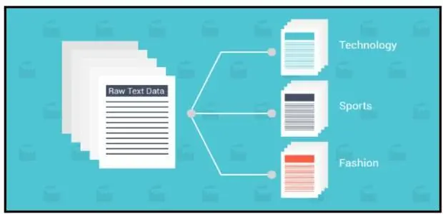

NLP基本研究方向简介
自然语言处理（英语：Natural Language Processing，缩写作 NLP）是人工智能和语言学领域的分支学科。此领域探讨如何处理及运用自然语言；自然语言处理包括多方面和步骤，基本有认知、理解、生成等部分。
自然语言认知和理解是让电脑把输入的语言变成有意思的符号和关系，然后根据目的再处理。自然语言生成系统则是把计算机数据转化为自然语言。
基于此，NLP领域延伸处理种类繁多的任务，这里总结了文本向量化、序列标注任务、文本分类、信息提取、以及复杂应用场景五大类NLP任务，做一个介绍。
文本向量化
文本的向量化可谓是NLP进入深度学习时代的标志。所谓文本的向量化（embedding），就是将文本用一定维度的向量来表示，也可以理解为文本的数值化。通过embedding，文本的语义、句法等特征得以表征，便于下游模型的处理。
例如，“人/如果/没有/梦想/，/跟/咸鱼/还有/什么/差别”，向机器学习模型直接输入字符串显然是不明智的，不便于模型进行计算和文本之间的比较。那么，我们需要一种方式来表示一个文本，这种文本表示方式要能够便于进行文本之间的比较，计算等。最容易想到的，就是对文本进行向量化的表示。例如，根据语料库的分词结果，建立一个词典，每个词用一个向量来表示，这样就可以将文本向量化了。
词的向量化，最早尝试是词袋模型，后来证明，词袋模型无法表征词序特征，并且会带来维度灾难；Yoshua Bengio在2003年《A Neural Probabilistic Language Model》一文中提出了一种神经网络的方法，用于语言模型的计算，词向量作为副产品后来却引起了业界的关注。2008年Collobert和Weston展示了第一个能有效利用预训练词嵌入的研究工作，他们提出的神经网络架构，构成了当前很多方法的基础。这一项研究工作还率先将词嵌入作为 NLP 任务的高效工具。不过词嵌入真正走向NLP主流还是Mikolov 等人在 2013 年做出的研究《Distributed Representations of Words and Phrases and their Compositionality》。Mikolov 等研究者在这篇论文中提出了连续词袋模型CBOW和 Skip-Gram 模型，通过引入负采样等可行性的措施，这两种方法都能学习高质量的词向量。基于此，ELMO提出了一种相同词能够根据语境生成不同词向量的模型。高质量的词向量的获得，结合LSTM、CNN等神经网络抽取器，使得NER，文本分类以及信息抽取等任务获得了长足的进步。
此外，基于词向量的思想，从2018年开始，NLP中预训练模型开始流行，BERT、GPT、ALBERT以及XLNET等模型不断刷榜。
序列标注任务
序列标注任务是NLP里非常基础和重要的任务，例如分词、NER等都属于序列标注任务，包括一些预测span的阅读理解任务也可归于此列。
分词通常是中文自然语言处理的第一步（随着深度学习模型表征能力越来越强，慢慢证明，分词未必是必要的）；NER是非常重要和基础的信息抽取任务，在非常多的场景中都需要用到，例如聊天机器人中的槽位抽取、文本结构化过程中的实体抽取等等。
早期的序列标注任务，例如分词，NER等主要是用HMM、CRF等机器学习模型；随着深度学习的兴起，LSTM+CRF变成序列标注任务的主流方法；当然，因为LSTM的若干缺点，不少NLP的从业者坚持使用CNN，因而基于膨胀卷积的序列标注模型得以提出。随着transformer的提出，利用BERT等预训练模型做NER这类任务开始变得流行，特别是抽取一些相对较长和复杂的实体，例如地址等。需要特别提出的是，有些情况下，正则匹配也是实体抽取的一种有效手段，可作为补充，例如时间实体等。
文本分类
文本分类是一个不难理解的概念，即通过计算机对输入文本进行分类，例如判断“你真是个帅哥啊”这句话是褒义还是贬义。文本分类的应用场景很多，例如情感分类、机器人中的意图识别等。

听上去，分类问题似乎是个不难解决的问题，实际上文本分类有它的难度。当类别非常多或者类别与类别之间差异很小时，文本分类就开始变得困难；再者，有时需要考虑额外特征才能分类正确，例如常常需要根据说话者语气，才能判断“你真是个帅哥啊”这句话是讽刺还是真心的赞美。
早期有一些基于传统机器学习的文本分类，例如基于某种词语特征的的贝叶斯模型，SVM分类器等。
随着深度学习的发展，LSTM+softmax/CNN+softmax模型变成了一种非常流行的文本分类架构，基于此Fasttext、textCNN等便捷高效的开源文本分类工具也开始流行。此外，结合Attention等技巧与概念能够一定程度的提高模型的效果。
文本分类还有另外一种模式，即通过将文本向量化，再通过聚类获得类别，NLTK等开源NLP工具都有便捷的Doc2vec API。如果觉得效果不好，可以试试BERT的【CLS】向量。此外，还可以增加TF-IDF模块，构建更有表达能力的DocVec。
信息提取任务
信息提取(IE)的目标是将文本信息转化为结构化信息，起初用于定位自然语言文档中的特定信息。广泛的看，信息提取其实是一个非常宽泛的概念，从文本提出感兴趣的内容就可以称为信息提取。在NLP中常常用实体抽取、关系抽取以及事件抽取等手段进行信息抽取。
实体抽取是序列标记问题，上面已经介绍过，关系抽取以及事件抽取则通常转化为分类的任务。关系抽取常常需要先确认subject以及object。所以，关系抽取任务常常伴随着实体抽取的要求。
早期，信息提取多使用正则和传统的机器学习方法。随着深度学习的快速发展，信息提取技术也开始迅速发展。实体抽取与关系抽取从Pipline的方式进化到end-to-end的方式。使用的特征抽取器也逐步进化，从LSTM/CNN到transformer。需要特别提出的是，BERT在信息抽取方面表现出色，基于BERT和阅读理解任务来做信息抽取，是一种非常别致的方式。
场景任务
此外，NLP还有一些复杂的应用场景，他们可能是多种NLP技术的应用和综合，例如聊天机器人、知识图谱、文本搜索以及文本推荐系统等。
搜索是NLP技术最早得到大规模应用的技术，例如百度搜索、知乎话题搜索以及各大互联网公司的query搜索技术，都涉及到语义匹配或文本分类技术。此外，大型的搜索引擎，知识图谱的搭建是必须的。
推荐系统在一定层面来说是跟搜索场景相反的。搜索是基于用户的意图，在文本库中寻找匹配项；推荐则相反，通常基于积累的用户信息，给用户推荐可能感兴趣的内容。推荐系统常常涉及用户画像、标签定义等过程，需要一定程度的依赖NLP技术。
聊天机器人是目前NLP技术应用最多的场景，基于NLP技术构建一个能够替代客服、销售、办公文员是这一任务的终极目标。目前，聊天机器人已经以各种形态出现在人们面前，有站在银行门口迎接顾客的迎宾机器人，有放在卧室床头的智能音箱，有呆在各个APP首页的助手机器人等等。在聊天机器人中，运用了文本分类、语义匹配、对话管理、实体识别等大量的NLP技术。要做好是一件难度大、超复杂的任务。
知识图谱是AI时代一个非常重要基础设施，大规模结构化的知识网络的搭建，能够重塑很多的智能场景。